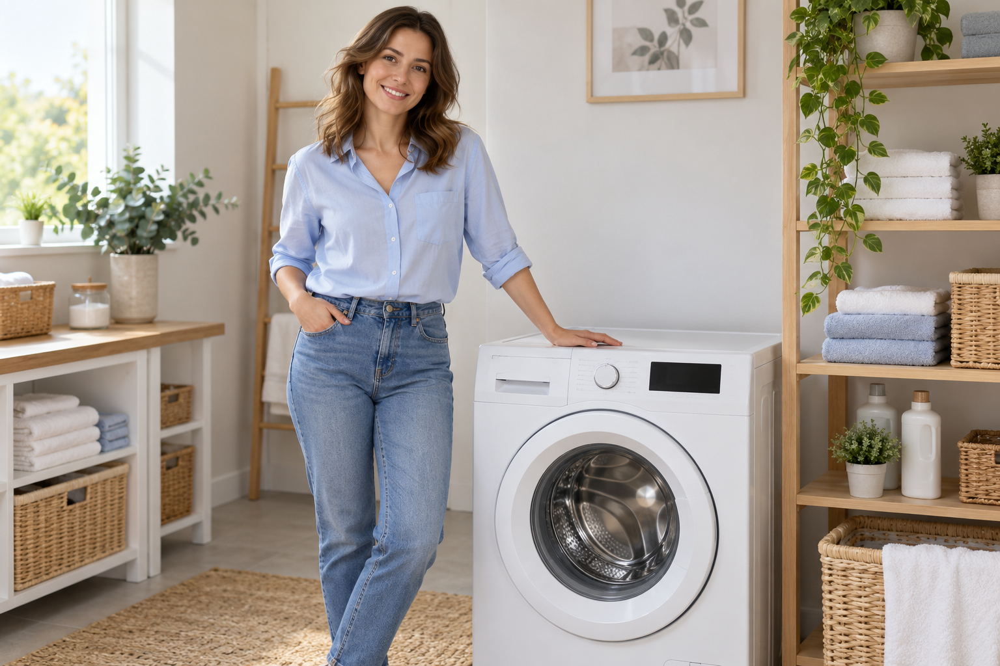

Не сливает воду
Вода остаётся в барабане, программа останавливается или появляется ошибка.
Ремонт стиральных машин
Не сливает, шумит или перестала включаться?
Расскажите о поломке — поможем сделать следующий шаг к ремонту.
Заявка в Telegram · без звонка

Знакомая ситуация?
Укажите модель стиральной машины и расскажите, что изменилось в её работе.
Вода остаётся в барабане, программа останавливается или появляется ошибка.
Слышен стук, появился сильный гул или машинка двигается при отжиме.
Не реагирует на кнопку, не запускает стирку или выключается в процессе.
Вода остаётся холодной, под машиной появляется лужа или бельё плохо отстирывается.
Не нашли свою поломку? Просто опишите её в заявке — точную причину определяет мастер при диагностике.
Откройте бота и отправьте свой телефон, чтобы мастер мог с вами связаться.
Напишите, что произошло, и укажите модель стиральной машины.
Бот покажет свободные часы. Запись доступна с 08:00 до 22:00 с шагом в два часа, по времени Самары.
Перед заявкой
Стоимость зависит от неисправности, модели и необходимых деталей. Уточните условия диагностики и итоговую стоимость у мастера до начала работ.
Ваш телефон, модель стиральной машины и описание проблемы. Если на дисплее есть код ошибки, добавьте его в сообщение.
Да. В меню бота выберите «Запись», затем другую дату и свободное время. Прежнее время освободится после успешного переноса.
Прекратите использование и перекройте подачу воды. Если это безопасно, отключите машинку от электросети сухими руками, не наступая в воду. Не запускайте повторную стирку до проверки.
Давайте начнём
Оставьте заявку в Telegram. Мастер получит ваш контакт,
описание проблемы и выбранное время.